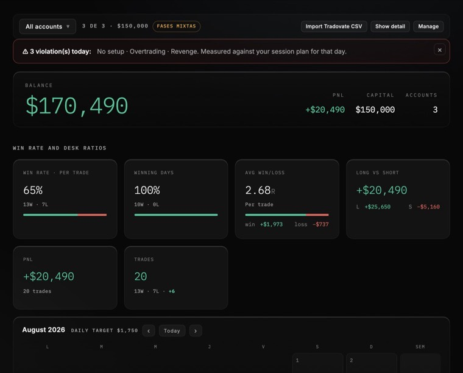
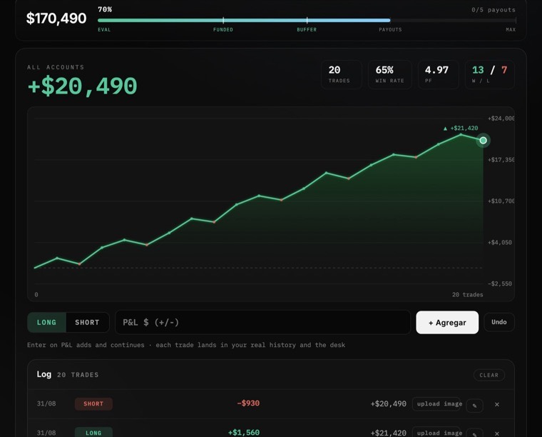
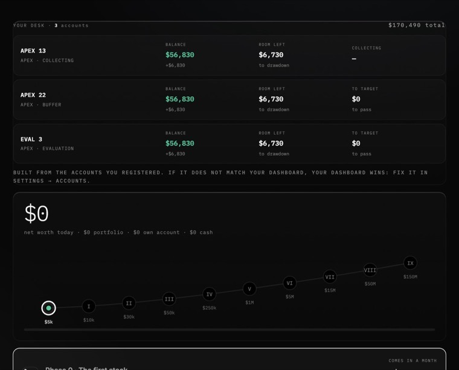
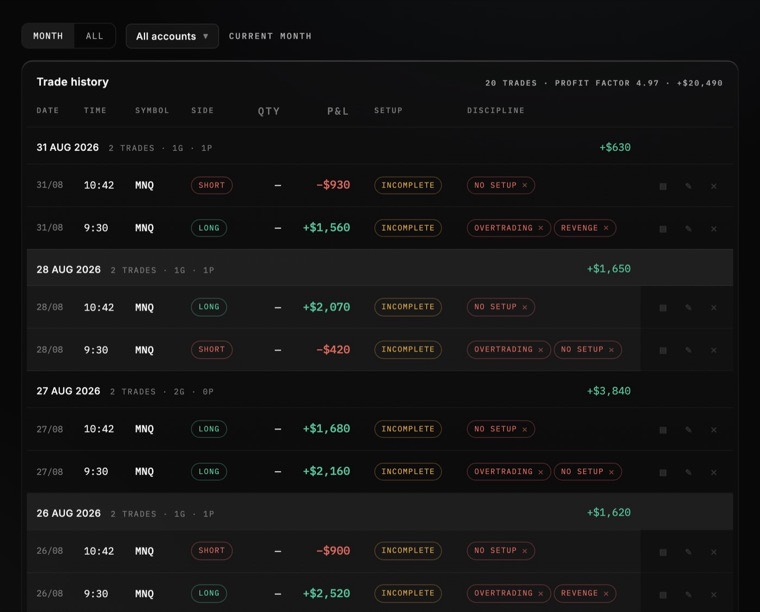
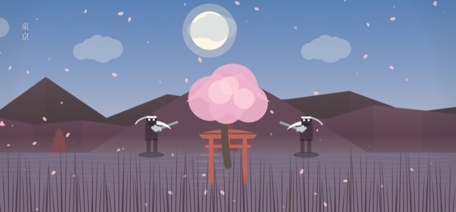
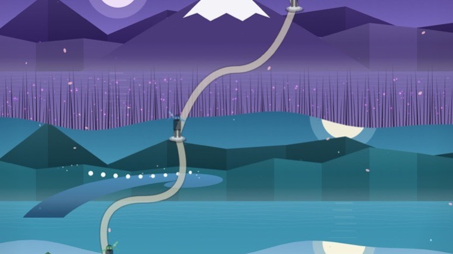
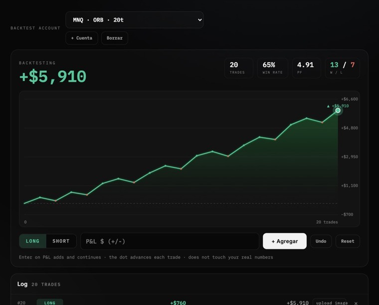

NorthPoint Terminal · v1
Trece pantallas para operar futuros como firma: el journal que se llena solo, tus cuentas de fondeo con su drawdown al aire, los indicadores del método, la academia completa y un rival que no duerme.

01 · Por qué existe
Cierras la operación y empieza la tarea: capturarla en una hoja, acordarte de con qué cuenta fue, calcular cuánto te queda de drawdown, revisar si rompiste tu propia regla. Casi nadie lo hace todos los días. Y el que no lo hace, no sabe por qué pierde.
02 · Registro
Terminas el trade, copias la captura de TradingView y la pegas en cualquier pantalla del Terminal con ⌘V. La lee una IA y saca el instrumento, el lado, el resultado y la hora. Tú confirmas. Se acabó llenar cajas.

03 · Qué trae
Todo lo que un operador de futuros toca en un día, y lo que toca una vez al mes. En el mismo lugar, con los mismos datos.
La mesa completa: quién opera, con cuánto capital, cuántas cuentas en examen y cuántas fondeadas. El retrato de la firma en un vistazo.
Balance, P&L, capital y cuentas arriba. Debajo: win rate por trade, días ganados, ganancia media contra pérdida media en R, y largos contra cortos. Calendario del mes con tu objetivo diario.
La curva de capital viva y el registro del día. Un botón para largo, otro para corto, el P&L y listo. Con deshacer, por si le picaste mal.
Cada operación con su fecha, hora, símbolo, lado, resultado, el setup que usaste y las marcas de disciplina: sin setup, overtrading, revenge. Profit factor arriba.
Tus cuentas una por una: balance, cuánto le queda al drawdown y en qué etapa va. Debajo, la escalera de nueve fases, de cinco mil a la meta grande.
El camino a tu primer cobro: la evaluación, el colchón y el tramo de pago, con la cuenta más adelantada al frente. Registras el payout y la barra avanza.
Los dos indicadores del método en Pine Script v6, para copiar y pegar. Con cada pieza explicada: killzones, rango de apertura, huecos de precio, estructura, Fibonacci, la orden y el canal de regresión.
Cuatro programas, doce módulos, treinta y cinco lecciones. De qué es un contrato de futuros hasta cómo se cobra un payout. Con tu avance guardado.
Tu cuaderno: notas por lección, tus objetivos, tu promesa y tu firma. Lo que escribes ahí no lo ve nadie más.
Duelos 1v1 con tiempo y apuesta, ranking por dan y una campaña de nueve katanas. Compites por P&L, no por presumir.
Cuentas de práctica separadas de las de verdad. Pruebas una idea, la mides, y tus estadísticas reales no se ensucian.
La otra velocidad del dinero: la tesis a 2040 en IA, semiconductores, infraestructura digital y blockchain, con tus posiciones y su reparto por clase.
Lo que entra y lo que sale de verdad. Los payouts que cobraste, lo que aportaste y lo que retiraste. El patrimonio, no solo la cuenta.
04 · Las cuentas
Das de alta una cuenta con tres datos: nombre, balance y etapa. A partir de ahí el Terminal te dice, todos los días, cuánto le falta para pasar y cuánto le queda antes de romperse.

05 · El historial
Cada operación guarda su setup y sus marcas de disciplina. Al final del mes no ves solo cuánto ganaste: ves cuántas veces te saltaste tu propia regla, y qué te costó cada vez.

06 · Kuro
Mil años en la cima y nadie lo ha bajado. Kuro es la parte del Terminal que convierte la disciplina en algo que se puede ganar. Retas a alguien de la mesa —o a él—, se pone tiempo y monto, y gana el que hace más profit. Sin señales, sin copiar: cada quien con su cuenta.

07 · La campaña
Hace mil años nueve maestros forjaron nueve espadas y encerraron en cada una una lección que no se enseña hablando. La campaña es el camino de subida: cada tramo pide una cosa distinta —paciencia, ojo para la liquidez, ruptura del rango, gestión del riesgo— y ninguna se regala.

08 · Backtesting
Cuentas de práctica aparte de las de verdad. Corres una idea cien veces, ves qué curva deja, y tus estadísticas reales ni se enteran. Cuando la idea aguanta, se pasa a la mesa.

09 · Algorithm
Pine Script v6, el mismo código que corre la mesa, sin recortes. Y debajo de cada uno, qué hace cada pieza explicado sin dar nada por sabido.
10 · Academy
Cuatro programas, doce módulos, treinta y cinco lecciones, cuatro horas y nueve minutos de material. Dentro del mismo Terminal, con tu avance guardado y tu cuaderno al lado.
11 · Precios
No hay plan recortado. Las trece pantallas, la academia completa, los dos indicadores y Kuro entran en los tres. Lo único que cambia es cada cuánto pagas.
Quien entre en este primer grupo se queda con el precio de hoy mientras siga suscrito, aunque el Terminal suba de precio después. No es una cuenta regresiva falsa: son cincuenta lugares y cuando se acaben, se acaban.
Precios en pesos mexicanos, IVA incluido. El Terminal es software: no es asesoría de inversión, no es un servicio de señales y no administra tu dinero. Las cuentas de fondeo se contratan con la firma que tú elijas, aparte.
12 · Antes de pagar
13 · Preguntas
No. Puedes registrar una cuenta de demo o de práctica y el Terminal funciona igual. La mayoría entra antes de tener la primera cuenta, hace la academia y usa el backtesting mientras junta para la evaluación.
El registro es por captura o por CSV, así que sirve con cualquiera. La importación directa de archivo está hecha para el formato de Tradovate; con los demás, pegas la captura y la IA la lee, o escribes el resultado a mano.
Nadie. Tus datos viven en tu equipo y en tu cuenta. Si usas la lectura de capturas, va con TU llave de IA, directo desde tu navegador. Nosotros no tenemos ojos en tu journal.
Nada se rompe. Escribes el P&L y la curva, las estadísticas y el calendario se mueven igual. La lectura de capturas ahorra tiempo, no es el candado.
El código se copia y se pega en tu TradingView, es tuyo desde que lo pegas. Lo que se actualiza es la versión que publicamos: mientras estés dentro, siempre tienes la última.
Español e inglés, con un interruptor. Y en oscuro o en claro, según cómo veas mejor a las siete de la mañana.
El mensual, cuando quieras, desde tu recibo. El anual corre los doce meses. Los primeros 14 días hay reembolso completo en cualquiera de los tres, sin explicaciones.
El Terminal está en línea ahora mismo. Entra, dale una vuelta a las trece pantallas y decide después.